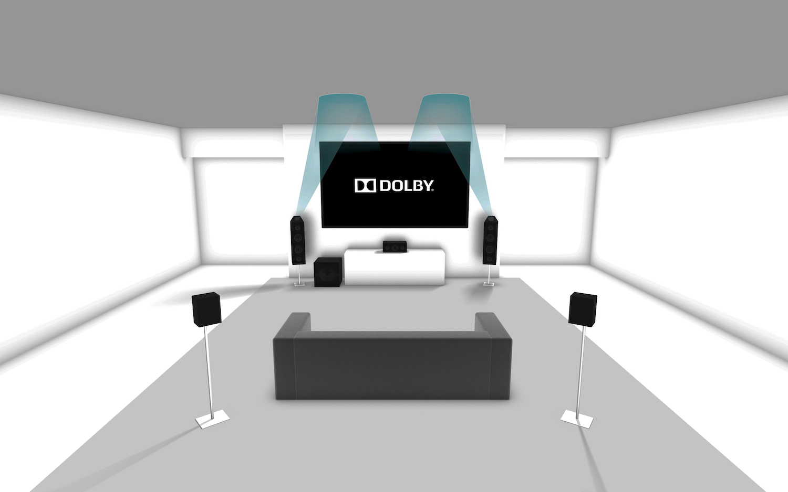

Onkyo Home Theater S7800
TV를 둘 곳을 못 찾아 홈시어터를 구성하기로 하고 BenQ HT2050 프로젝터와 함께 여러 사운드 시스템을 알아보았습니다. 프로젝터 사운드도 괜찮다는 평이 많았는데, 그럼에도 불구하고 사운드 시스템을 찾은 이유가 있어요.
- 천장에 장착한 프로젝터에 HDMI 케이블로 영상을 연결해야 하는데, Xbox, Notebook, Chromecase, NAS 를 번갈아가며 연결하는게 매우 번거로움
- 센터 스피커가 없어서, 이전 TV로 영화를 볼 때 5.1 채널이면 목소리가 잘 안들림
가장 신경 쓰였던 건 첫번째 이유였어요. 천장으로 구멍을 뚫기도 애매하고, 매번 기기를 바꿀 때 마다 HDMI 케이블을 뽑아서 써야하니 귀찮아 지는게 많을 것 같아 보였어요.
그래서 이리저리 홈시어터 사운드 시스템을 검색해 보니, 요새 시스템은 여러 HDMI 입력을 받아서 소리를 빼고 영상만 HDMI out으로 내보내더군요. 놀라운 세상이라고 감탄하며 그 당시 할인이 강하게 들어간 온쿄 S7800 5.1.2 채널 시스템을 들이게 되었습니다.
Dolby Atmos
먼저 5.1 채널과 5.1.2 채널의 다른점이 뭔지 알아야 하는데, 5.1.2 채널은 Dolby Atmos 를 구현하기 위한 채널이에요. 마지막 자리 .2 가 천장 스피커를 말하는데, 천장에 직접 스피커를 달면 위에서도 소리가 들리기 때문에 비 내릴때나 비행기가 위로 날아갈 때 정말 실감이 납니다.

위의 그림에서 보이는 것 처럼, Onkyo S7800 시스템은 천장에 직접 스피커를 달기 어려워 하는 사람을 위해 Front speaker를 변형을 해서 천장을 향해 쏘는 high speaker를 한 모듈에 합쳤어요. 그래서 전면 스피커에 그릴이 두 방향으로 나와있습니다. 하나는 천장을 향하는 것과 다른 하나는 일반적인 전면을 향하는 것. 스피커 케이블도 두쌍이 연결되요. 직접 천장에서 울리는 것 보다는 조금 약하긴 한데 왠만큼 커버는 해 주더라구요.
Installation
박스를 뜯어보면 정말 많은 스피커와 메인 시스템, 그리고 안내책자와 몇가지 배선을 볼 수 있는데요. 스피커를 연결하는 선이 정말 아쉽더군요. 22 Gauge 정도 되는 듯 한 부실한 선이라 아마존에서 곧장 16 Gauge 선을 구입해서 연결했습니다. 제조사 말로는 22 Gauge로 충분하다고는 하는데 맘 편하게 16 Gauge로... 연결포트는 14 Gauge까지는 연결이 가능하다고 하니 돈을 좀 더 쓰고 싶으면 14 게이지로 가셔도 되지만 16 게이지도 방 하나를 커버하기엔 충분한 듯 합니다.
보통은 메인 앰프를 전면쪽에 두기 마련인데 전 상황이 여의치 않아서 서라운드 스피커 쪽에 둬야 해서 어차피 기본 케이블이 길이도 안맞더군요. 기본 케이블은 전면에 두는걸 가정해서 front, center, high 스피커 선이 짧고 surround 선이 길어요.
연결은 직관적이라 그다지 어려운 부분은 없습니다. +/- 만 잘 맞춰서 연결하면 끝~
Configuration and Firmware Update
처음 전원을 켜면 설정된 환경에서 crosstalk 이나 소리 크기를 측정하는데 이때 같이 딸려온 Accu EQ 마이크를 이용해 청취 위치에서 측정을 합니다. 세팅이나 방 구조가 바뀌거나 소리가 반사되는 환경이 바뀐다 싶으면 언제든 다시 조정이 가능하니 마음에 들더군요.
초기 펌웨어는 Google Cast가 지원되지 않아 Wifi 연결 후 곧장 펌웨어 업데이트를 하였습니다. (사운드 시스템에 펌웨어 업데이트라니... 세상 많이 좋네요 ㅎ) 그런데 업데이트 후에 Google Cast를 사용해보니 딜레이가 너무 길더군요. 결국 다시 Chromecast를 오디오 스트리밍 기기로 같이 쓰고 있습니다.
Listening
제가 막귀라 음질이 좋다 나쁘다를 논할 만한 실력이 되질 않아서 음질 이야기를 못하겠네요. 128 kbps 와 256kbps를 구별도 못하는 사람이라...
그래도 단언컨데 TV에서 나오는 소리나 프로젝터에서 나오는 소리보다는 좋습니다. 게다가 5.1.2 채널이잖아요? 뒤에서 총소리 들릴때나 위에서 비행기가 지나갈 때 실감 납니다.
다만, Dolby Atmos 지원하는 영화나 드라마가 정말 없네요. 5.1채널은 널리 퍼진 것 같은데 아직 Atmos는 좀 이른 듯 합니다. 넷플릭스 계정이 없어서 옥자를 못 보았는데, 한번 보고 싶네요.
Conclusion
999달러에도 편하게 홈시어터를 구성하기에 더할나위 없이 괜찮은 가격이라 평 받는 제품인데 운 좋게 2/3 가격에 구해서 잘 사용하게 되었습니다. 시스템 구성도 알차고, 4k 출력도 되고 (제 프로젝터가 지원을 하진 않지만...) 나무랄 곳 없는 제품인것 같아요. 이번 블랙 프라이데이때 또 할인이 엄청 들어갈 것 같으니 땡기시면 아마존을 주시하시길. :)